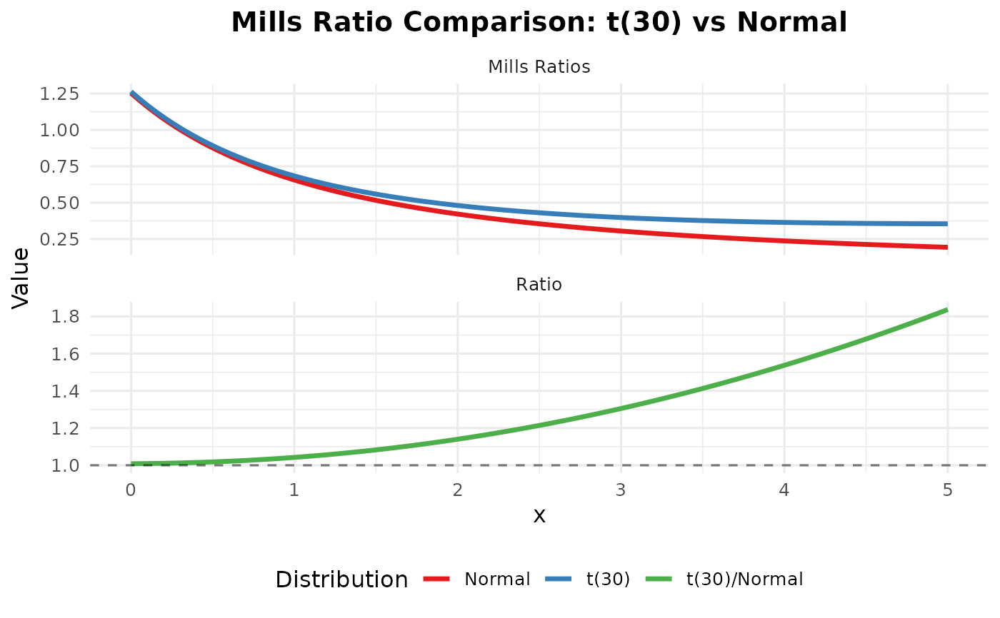

R/visualization.R
plot_mills_comparison.Rd
Plot Mills Ratio Comparison
plot_mills_comparison( x_range = c(0, 5), dist1, dist2, df1 = NULL, df2 = NULL, show_ratio = TRUE )
Range of x values
First distribution
Second distribution
Degrees of freedom for first distribution
Degrees of freedom for second distribution
Logical; if TRUE, shows ratio plot
ggplot2 object
plot_mills_comparison(c(0, 5), "t", "normal", df1 = 30) 
